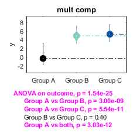

compare_3_groups
Contents
Repo location
This function is contained within basic_stats https://gitlab.com/Fair_lab/basic_stats
Intro
This function provides a quick way to run a statistical analysis on 3 groups and visualize results. It runs an anova test and posthocs comparing each group-pair using a Kolmogorov test.
Usage
This function makes 3 things:
- compares 3 groups using an anova test
- compare each pair of groups using a Kolmogorov-Smirnov (KS) test. It also compares the first group versus the other 2 groups combined also using a KS test. The order of the groups is determined alphabetically
- visualize the results.
For the anova test, data is normalized uisng z-scores. For ploting anf KS test, data is used as provided in the local_table.
Input variables (mandatory):
- local_table: The last element of the table should be the variable to be compared. The end-1 element is the grouping variable. Extra-columns are ignored
Input variables (optional):
- tit, text to be used as title for the figure
- save_figure_flag,"1" or "0", default "0". If set to one, figure is saved
- my_color: a RGB colormap to be used to display the histograms. If not provided, default colors are black, cyan, and blue.
Output variables:
- p, a vector with 5 p-values, one for the anova test and the remaining four for each KS test
- labels, cell array with 5 elements, where each entry corresponds to the p value reported on the first output, respectively
- labels_, similar to previous one but spaces are replaced with underscores (useful for combining data in tables)
Example
First, lets make fake data with 3 groups and combine the data to make a table
define the number of groups
N=3; % define how many participants per groups n=[20 21 25]; % % Name the groups unique_labels{1}='Group A'; unique_labels{2}='Group B'; unique_labels{3}='Group C'; % Make random noise adding an offset per group offset=[0 5.1 5.2]; % y=[]; labels=[]; for i=1:N y=[y; randn(n(i),1)+offset(i)]; labels=[labels; repmat(unique_labels{i},n(i),1)]; end % % Combine results and make a table T=table(labels,y); % % Run the test [p, labels, labels_]=compare_3_groups(T)
p =
0.0000
0.0000
0.0000
0.4004
0.0000
labels =
5×1 cell array
{'ANOVA on outcome' }
{'Group A vs Group B'}
{'Group A vs Group C'}
{'Group B vs Group C'}
{'Group A vs both' }
labels_ =
5×1 cell array
{'ANOVA_on_outcome' }
{'Group_A_vs_Group_B'}
{'Group_A_vs_Group_C'}
{'Group_B_vs_Group_C'}
{'Group_A_vs_both' }
 Credits
Credits: Oscar Miranda-Dominguez | Jan 2019